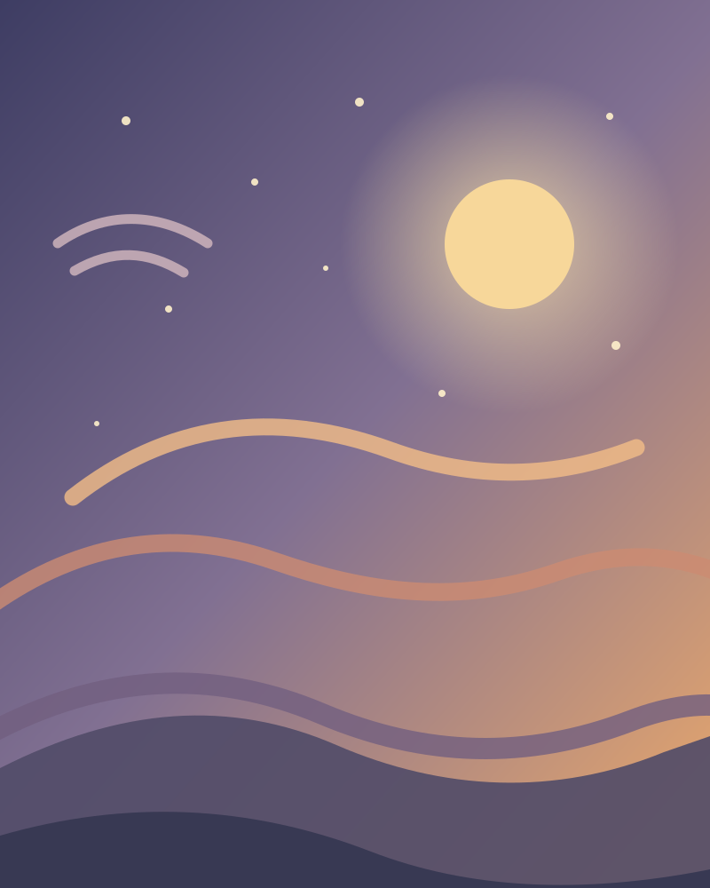

Put it into words
No need to find the perfect phrase. Just tell us what’s on your mind, exactly as it is.
↗A little space to name what’s on your mind — and find a work of art that meets you there.
Find your art ↗
No need to find the perfect phrase. Just tell us what’s on your mind, exactly as it is.
↗Discover real artworks from museum collections, picked to echo the way you feel.
✳Save the pieces that stay with you. Your personal art journal grows over time.
⌁